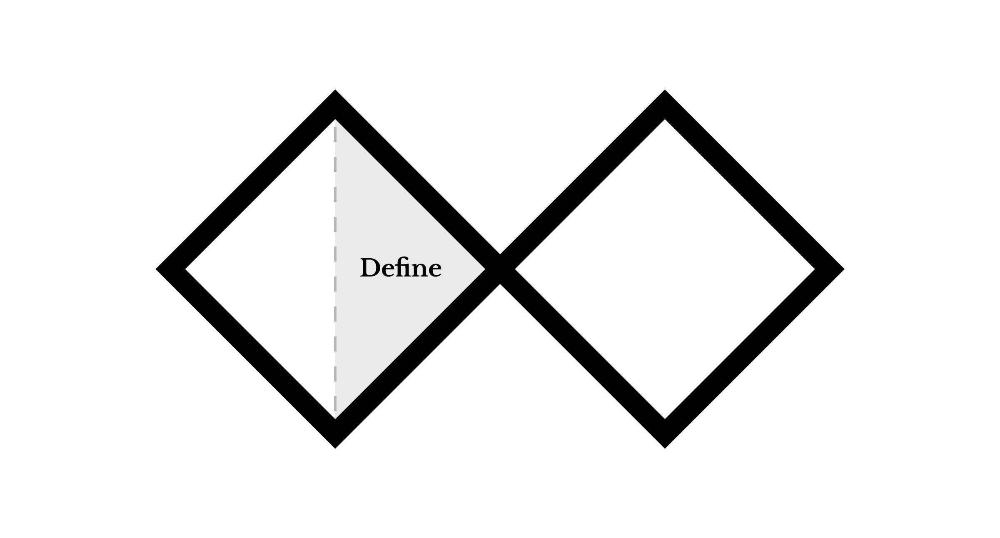

Define: Word pairs
Now that you've finished conducting the observation, it's time to start exploring possible directions for the project. This step is important to help focus the How Might We question that will drive the rest of the project's direction.
Materials
- Pen or pencil
- Journal
Instructions
- Re-read your observations.
- In your journal, write "Ritual project: Word pairs..." at the top of the page.
- Write at minimum three sentences using the following formula that explain what the object is for: "name of the object is for the purpose of purpose verb or noun." The purpose verb or noun will be known at the "purpose word."
- Lower on the page, write word-pairs at the top. Identify and write a minimum of three word-pairs by matching the purpose (the words from the end of your sentences) to the focus word, "intervention."
- For example, let's say that the object is a bed. A bed could be used for the purpose of sleeping, so "sleeping-intervention" is the word pair that you would generate. A bed could also be used for many other things like studying, healing from illness or injury, hiding from monsters (in the case of a child), or more generally supporting a state of comfort or rest. You could then generate word pairs like "learning-intervention," "healing-intervention," "saftey-intervention," and "comfort-intervention." The word pairs should not be too specific or too broad. For instance, instead of sleep, you could write "rem cycles," which would not allow you much room to conceptualize ideas in the following steps. You could also write "living" instead of sleeping, as it is a requirement for humans to live, however, this would be so broad that it would be challenging to narrow down ideas. These should be universal experiences as much as possible.
Post work
Use the file format indicated in each step. You must obtain prior approval to deviate from these upload requirements. Please check that your work has uploaded properly.
- Check that you have written a minimum of three purpose statements.
- Check that you have written a minimum of three word-pairs.
- Submit a clear, unobstructed, well lit, readable, properly oriented and straight, high resolution scan or photograph of your journal notes in
.jpgor.pngformat.